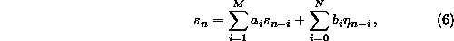
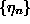
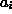
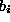
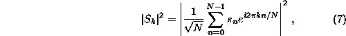
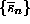
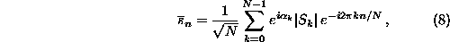
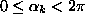

Next: Rescaled Gaussian linear process
Up: Surrogate time series
Previous: Test design
In this section, we will discuss a hierarchy of null hypotheses and the
issues that arise when creating the corresponding surrogate data. The simpler
cases are discussed first in order to illustrate the reasoning. If we have
found serial correlations in a time series, that is, rejected the null
hypothesis of independence, we may ask of what nature these correlations are.
The simplest possibility is to explain the observed structures by
linear two-point autocorrelations. A corresponding null hypothesis is that the
data have been generated by some linear stochastic process with Gaussian
increments. The most general univariate linear process is given by

where  are Gaussian uncorrelated random increments. The
statistical test is complicated by the fact that we do not want to test against
one particular linear process only (one specific choice of the  and
), but against a whole class of processes. This is called a
composite null hypothesis. The unknown values and are sometimes
referred to as nuisance parameters. There are basically three directions
we can take in this situation. First, we could try to make the discriminating
statistic independent of the nuisance parameters. This approach has not been
demonstrated to be viable for any but some very simple statistics. Second, we
could determine which linear model is most likely realised in the data by a fit
for the coefficients and , and then test against the hypothesis that
the data has been generated by this particular model. Surrogates are simply
created by running the fitted model. This typical realisations approach
is the common choice in the bootstrap literature, see e.g. the classical book
by Efron [29]. The main drawback is that we cannot recover the
true underlying process by any fit procedure. Apart from problems associated
with the choice of the correct model orders M and N, the data is by
construction a very likely realisation of the fitted process. Other
realisations will fluctuate around the data which induces a bias against
the rejection of the null hypothesis. This issue is discussed thoroughly in
Ref. [8], where also a calibration scheme is proposed.
The most attractive approach to testing for a composite null hypothesis seems
to be to create constrained realisations [25]. Here it is useful to
think of the measurable properties of the time series rather than its
underlying model equations. The null hypothesis of an underlying Gaussian
linear stochastic process can also be formulated by stating that all structure
to be found in a time series is exhausted by computing first and second order
quantities, the mean, the variance and the auto-covariance function. This
means that a randomised sample can be obtained by creating sequences with the
same second order properties as the measured data, but which are otherwise
random. When the linear properties are specified by the squared amplitudes of
the (discrete) Fourier transform

that is, the periodogram estimator of the power spectrum, surrogate time series
 are readily created by multiplying the Fourier transform
of the data by random phases and then transforming back to the time domain:

where  are independent uniform random numbers.
Next: Rescaled Gaussian linear process
Up: Surrogate time series
Previous: Test design
Thomas Schreiber
Mon Aug 30 17:31:48 CEST 1999